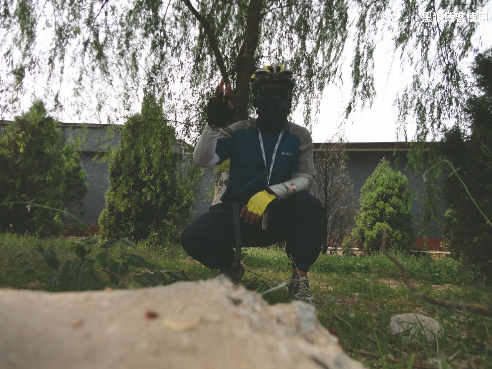
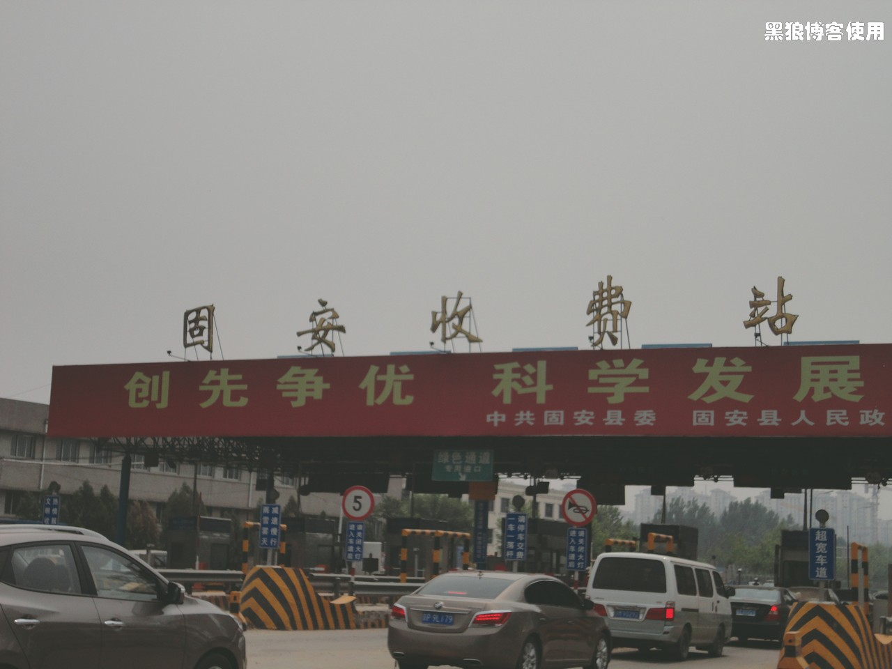
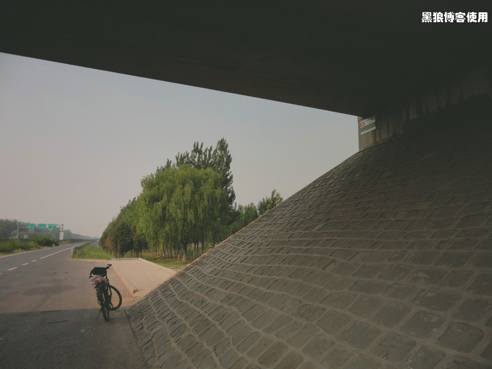

5 月18 号星期五，这天真是窝火，从早上起床到走出家门、晚上回家到睡觉，所有在家里的时间都花费在了找东西上，一开始是找数码相机，找了好久终于在被我翻了 N 遍的大兜子里面找到了，然后又开始找苹果 mp3 的耳机，到目前还没有找到。看来 19 号单车压马路时，不用带mp3 了。其他的东西都准备好了，只有一项还没有定下来：骑车去哪里？固安、涿州？
5 月 18 号，这一天另一件更为窝火的事情是：胡有理同志上周日把车停在唐拉雅秀后头，居然窗户上贴了一堆罚单。肯定是那个收停车费的sun 子，太黑了，据他说，每天一张，不过最后网上查了一下，居然才只有 2 张，其它的没有登上，不知道会不会过几天才陆续登上。
5 月 19 日星期六，一大早起来，7 点钟就吃好饭、把所有的东西都准备好了，就是还不知道去哪里，本来打算投硬币决定去哪里的。不过，“不要给我找 Trouble”，是很难实现的。
真正出发却是 8:50 了。太匆忙，都忘了在出发墙前留影了。
18 号晚，小豆包的姥爷不知从哪里抓来条蜥蜴，据说只吃面包虫，胡有理同志非要我去给蜥蜴买面包虫。我找了一圈花鸟市场，买回来居然骑单车跑了 18 公里。到家里后，见到面包虫，胡同志和小豆包都躲得远远的，无奈，还要我继续处理，喂蜥蜴、把虫子放到冰箱里冷藏，完事，时间已经不早了。
8:50 冲出家门，骑上单车，没有目的，先往南走。到了南四环，决定去固安，距离相对近一些，现在时间也不早了，太阳也火辣辣的。
10 点钟，到了五环。
10:30 到了六环，桥下，休息 10 分钟。
一路上，没发现什么风景，也懒得拍路标了，飞奔，奔，奔，…
11:25 到了京开高速南边的榆垡收费站。休息会，自拍几张。
太阳很大，我躲到树下乘凉。 摆了半天姿势，满头大汗，终于拍了张相对清楚些的。
11:50 到了北京野生动物园，拐到门口转了转。（注：下面照片中的哥们摆了好长时间的各种姿势，太热了，我实在等不及了，拍吧，大家忽略掉照片中央的人物）
本来想买瓶水，一问，脉动居然卖到 8 元，算了，再坚持一下，出发。结果一出动物园往南，几百米，
一个加油站，进去买了瓶脉动，4.5 元，还不错。接着走，据说离固安还有 5 公里吧。
到了固安收费站，国道居然还有收费站呢，不是都开始取消了吗，难道我记错了？
12:23 到了固安，大马路，绿化不错，满大街的售楼先生和售楼小姐。
12:50 找了半天，也没找到吃饭的地方，本来发现了一个自助烤肉，不过老板看我一个人，显然满脸的犹豫之色，算了，继续吃家常菜吧。
14:45 逛了两家超市，没有找到廊坊特产的迎春酒，买了点水、饼干、运动饮料，开始慢慢的骑，准备往回走。
15:05 刚才休息了会儿后，腿部肌肉有点发僵，慢慢的蹬了 15 分钟后，到了固安县收费站，肌肉恢复了不少。
15:30 到了一个桥下，休息会。
无意中发现了一个站牌，居然能到白云路、南礼士路（离我住的地方 800米），再一看长长的一列站名，真够远的呀。
17:53 到了南四环，今天的感觉就是太热，太阳比较晒。已经骑行了 106公里（不包括早上的 18 公里）。
18:48 到了家，差点赶上雨。
今天总共骑行 18 公里+ 118 公里 = 136 公里，最高速度 44.5 公里/ 小时。一路上，风景不多，也就基本没有拍照。
仔细体验了下，阿司匹林的作用没有我想象的大，这次骑行腿也没有感觉特别的酸痛，每次休息后，基本几分钟就可以恢复到最佳状态。
晚上，小豆包打来电话，不回来了，居然说是给我放假，还说可以自由地喝酒，今天不管我了。